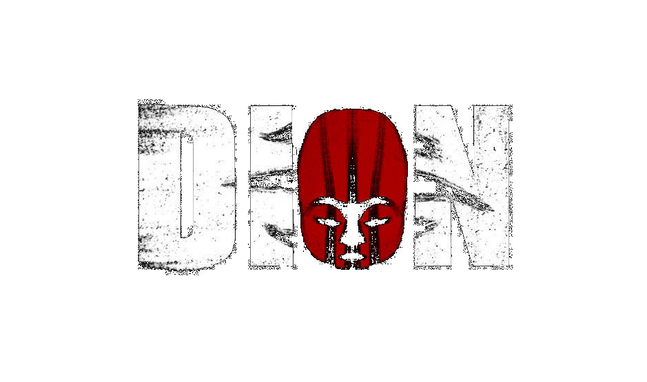

Tools Used:
Outils Utilisés:
- Unity
- C#
- Plastic SCM
- Agile
- Role: Game Programming Intern
- Rôle: Stagiaire en Programmation de Jeux
- Team Size: 4
- Taille D'Équipe: 4
- Time Worked On: 3 Months
- Durée de Mon Travail: 3 Mois
This game is currently in development by Baobab Games, who were looking for interns to help speed up development. As such, I worked alongside the lead developer and fellow interns from May 11th to August 19th. This experience has been invaluable for me as I have been able to learn a lot about game programming and development. This includes optimization, server/client side debugging and controller support, among other things.
Ce jeu est actuellement en cours de développement chez Baobab Games, qui recherchait des stagiaires pour aider à accélérer le développement. J'ai donc travaillé avec le développeur en chef et d'autres stagiaires du 11 mai au 19 août. Cette expérience a été très enrichissante pour moi, car elle m'a permis d'apprendre beaucoup sur la programmation et le développement de jeux vidéo. J'ai notamment pu me familiariser avec l'optimisation, le débogage côté serveur et côté client, et la compatibilité avec les manettes, entre autres.
Optimization
Optimisation
Optimization was by far the most challenging part of development for me, as I hadn't been taught about it during my studies. That being said, this was also what I learned about the most. As I got more used to using the Unity Profiler to diagnose, test and optimize, I broke down the things I learned into three types: Code Optimization, Vegetation Optimization and Terrain Optimization.
L'optimisation a été de loin la partie la plus complexe du développement pour moi, car je n'avais pas reçu de formation à ce sujet pendant mes études. Cela dit, c'est aussi ce que j'ai le plus appris. Au fur et à mesure que je me familiarisais avec l'utilisation du Profiler de Unity pour diagnostiquer, tester et optimiser, j'ai classé ce que j'avais appris en trois catégories : l'optimisation du code, l'optimisation de la végétation et l'optimisation du terrain.
Code Optimization had me become more familiar with C#'s event system, as opposed to using the Update function to avoid calls every frame
when not necessary, as well as making sure Debug.Log calls weren't being called too much.
Vegetation Optimization taught me about LOD grouping and baking the world's vegetation in order to reduce draw calls, which helped a lot
when trying to reduce the game's framedrops.
As Unity's terrain system is quite resource intensive, Terrain Optimization was very important for me to learn. Fine tuning terrain settings
like Pixel Error and Detail Distance helped to reduce draw calls while still retaining the look of the game.
L'optimisation du code m'a permis de mieux maîtriser le système d'événements de C#, plutôt que d'utiliser la fonction
Update pour éviter les appels à chaque image lorsque cela n'était pas nécessaire, tout en veillant à ce que les appels à Debug.Log
ne soient pas trop fréquents.
L'optimisation de la végétation m'a permis de découvrir le regroupement par LOD et le « baking » de la végétation du monde
afin de réduire le nombre d'appels de rendu, ce qui m'a beaucoup aidé à limiter les baisses de framerate du jeu.
Le système de terrain de Unity utilisant beaucoup de ressources, l'optimisation du terrain était pour moi un sujet essentiel à maîtriser.
Le réglage précis des paramètres du terrain, tels que l'erreur de pixel et la distance de détail, m'a permis de réduire le nombre d'appels
de rendu tout en conservant l'aspect visuel du jeu.
Online Multiplayer
Multijoueur En-Ligne
This project was my first experience developing an online multiplayer game and working at this scale.
I gained valuable experience understanding the networking system, debugging server-client desyncs,
and investigating issues that occurred when multiple players interacted with the same objects.
One issue involved an interactable structure that entered a cooldown period after activation.
An object was supposed to disappear during the cooldown, but only the activating player could see it disappear.
Other players could still see the object, despite being unable to interact with it.
I traced the issue through the player interaction, server, and client representations and discovered
that the object's Renderer was being disabled locally rather than through a synchronized network state.
Since Mirror does not automatically synchronize properties such as Renderer.enabled, the visual change was not reflected on other clients.
Resolving this issue taught me an important lesson about multiplayer development:
an object's gameplay state and its visual representation must be treated as separate concerns.
This experience strengthened my understanding of client-server architecture, network synchronization,
and how gameplay changes must be consistently propagated across all connected clients.
Ce projet a été ma première expérience dans le développement d'un jeu multijoueur en ligne et dans le travail à cette échelle.
J'ai acquis une expérience précieuse en apprenant à comprendre le système de mise en réseau, en déboguant les désynchronisations
serveur-client et en analysant les problèmes qui survenaient lorsque plusieurs joueurs interagissaient avec les mêmes objets.
L'un des problèmes concernait une structure interactive qui entrait dans une période de recharge après son activation.
Un objet était censé disparaître pendant cette période de recharge, mais seul le joueur qui l'avait activé pouvait le voir disparaître.
Les autres joueurs pouvaient toujours voir l'objet, bien qu'ils ne puissent pas interagir avec lui.
J'ai remonté la piste du problème à travers les représentations au niveau du joueur, du serveur et du client,
et j'ai découvert que le Renderer de l'objet était désactivé localement, et non via un état réseau synchronisé.
Étant donné que Mirror ne synchronise pas automatiquement des propriétés telles que Renderer.enabled,
le changement visuel n'était pas répercuté sur les autres clients.
La résolution de ce problème m'a appris une leçon importante concernant le développement multijoueur:
l'état d'un objet dans le gameplay et sa représentation visuelle doivent être considérés comme deux aspects distincts.
Cette expérience m'a permis de mieux comprendre l'architecture client-serveur, la synchronisation réseau et la manière dont les
changements dans le gameplay doivent être propagés de manière cohérente à tous les clients connectés.
What I Learned
Ce Que J'ai Appris
Technical Skills
Compétences Techniques
- Plastic SCM
- Mirror Networking
- Playfab
- Steam API
- Optimization/Profiling
Soft Skills Strengthened
Compétences Relationnelles Renforcées
- Problem Solving
- Résolution de Problèmes
- Communication
- Documentation
- Troubleshooting/Testing
- Dépannage/Tests
- Working with Agile/Scrum
- Travailler avec Agile/Scrum